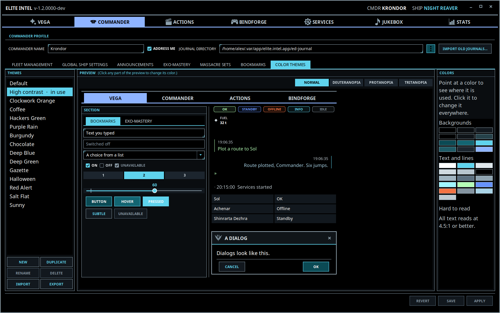
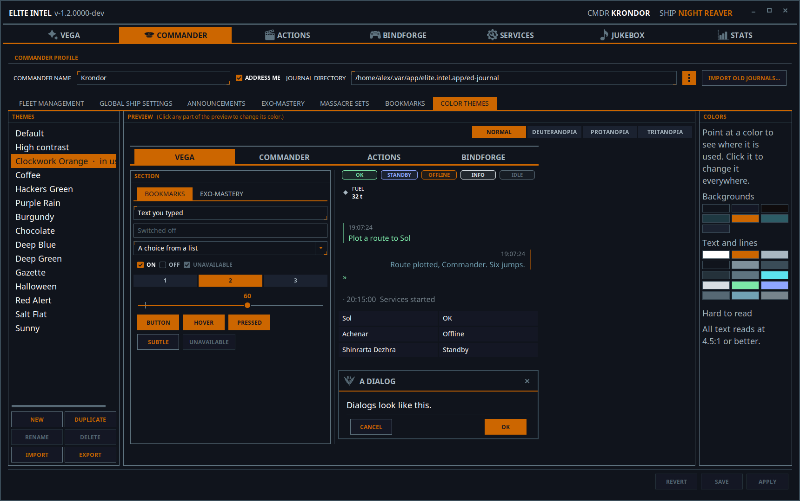
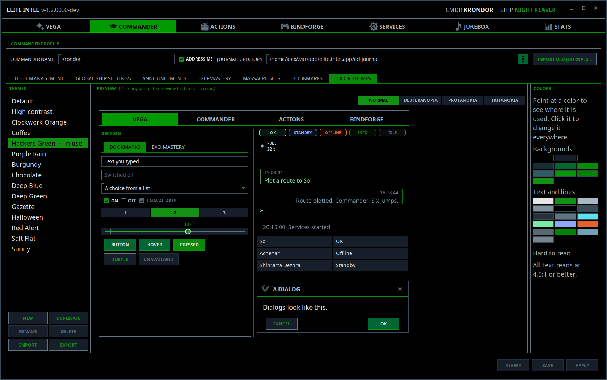
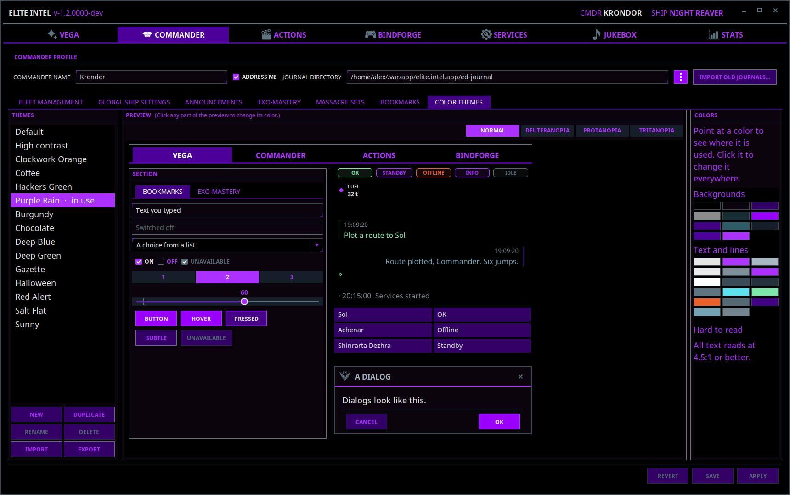
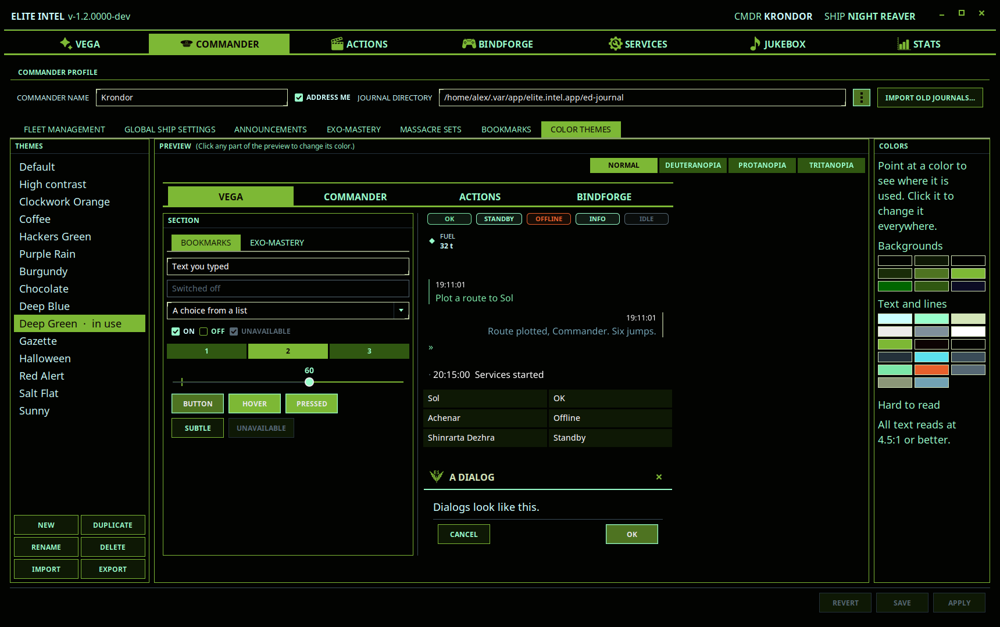

Thèmes de couleur
 Commandant → Thèmes de couleur :
les couleurs dans lesquelles la fenêtre de l'application est dessinée. Choisissez l'un des thèmes intégrés, créez
le vôtre, ou téléchargez-en un ci-dessous.
Commandant → Thèmes de couleur :
les couleurs dans lesquelles la fenêtre de l'application est dessinée. Choisissez l'un des thèmes intégrés, créez
le vôtre, ou téléchargez-en un ci-dessous.

Les couleurs par défaut sont déjà réglées pour les commandants daltoniens : le vert, le bleu et le rouge qui signalent OK, attente et danger restent distincts pour les formes de daltonisme les plus courantes, et tout texte atteint au moins 4,5:1 de contraste avec son fond. Si elles ne conviennent toujours pas à vos yeux ou à votre écran, créez le vôtre.
L'overlay HUD ne fait pas partie d'un thème. Il a ses propres couleurs, dans ses propres réglages.
Thèmes intégrés
- Par défaut : les couleurs réglées décrites ci-dessus.
- Contraste élevé, pour une vue faible ou les reflets : fonds noirs, texte blanc, cadres plus clairs et tout texte à 7:1 ou mieux.
- Clockwork Orange : orange comme le HUD du jeu, et comme l'application avant la V1.2.
- Coffee : bruns chauds et crème.
- Hackers Green : vert sur noir, comme un vieux terminal.
- Purple Rain : violet sur presque noir.
- Red Alert : rouge sur noir.
Par défaut et Contraste élevé sont faits pour être faciles à lire. Les autres sont faits pour le style : ils ne sont pas réglés pour le daltonisme.
Les thèmes intégrés ne peuvent pas être modifiés : votre première modification de l'un d'eux va dans une copie.
Contraste élevé

Clockwork Orange

Coffee

Hackers Green

Purple Rain

Red Alert

Créer le vôtre
- Cliquez sur une partie de l'aperçu pour changer sa couleur. L'aperçu est dessiné par l'application elle-même : il ressemble exactement à ce que montrera l'application. Si d'autres parties partagent cette couleur, vous choisissez : Toutes les parties de cette couleur, ou Seulement cette partie.
- Pointez une partie de l'aperçu, ou l'une des Couleurs à droite, et tout le reste s'assombrit, pour voir où cette couleur est utilisée. Cliquer sur une couleur la change partout.
- Voir comme montre l'aperçu tel que le voit une personne atteinte de deutéranopie, de protanopie ou de tritanopie, pour vérifier un thème avant de le partager.
- Difficile à lire liste le texte que votre thème rend difficile à lire, avec son contraste. Cliquez sur l'un d'eux pour le corriger, ou sur Tout corriger : la couleur est éclaircie ou assombrie juste assez. Ce n'est qu'un avertissement : rien n'empêche d'enregistrer.
- Enregistrer garde vos modifications. Appliquer enregistre et en fait le thème utilisé. L'application lit ses couleurs au démarrage, elle propose donc de redémarrer.
Sous la liste se trouvent Nouveau, Dupliquer, Renommer et Supprimer, ainsi qu'Importer et Exporter pour le partage (ci-dessous).
Vos thèmes sont conservés avec les données de l'application, donc Sauvegarder paramètres et données les inclut.
Partager des thèmes
- Exporter écrit le thème sélectionné dans un fichier à partager, exactement tel qu'il apparaît, modifications non enregistrées comprises.
- Importer ajoute un thème que quelqu'un a partagé avec vous. Si vous avez déjà un thème de ce nom, vous choisissez : Le remplacer ou Garder les deux.
Vous en avez créé un qui vous plaît ? Partagez-le sur Matrix.
Télécharger d'autres thèmes
Huit thèmes de plus à essayer. Téléchargez-en un, puis dans Commandant → Thèmes de couleur cliquez sur Importer, choisissez le fichier, puis Appliquer. Ils sont faits pour le style : ils ne sont pas réglés pour le daltonisme. Gazette, Salt Flat et Sunny sont des thèmes clairs.
Décompressez-le d'abord : Importer prend un fichier de thème à la fois.
Burgundy

Texte vert pâle sur bordeaux profond, avec des cadres mauves. ⬇ Burgundy.json
Chocolate

Blanc doux et gris sur presque noir. ⬇ Chocolate.json
Deep Blue

Des bleus sur bleu nuit. ⬇ Deep-Blue.json
Deep Green

Des verts vifs sur noir. ⬇ Deep-Green.json
Gazette

De l'encre noire sur papier blanc, comme un journal. ⬇ Gazette.json
Halloween

Orange citrouille sur brun foncé. ⬇ Halloween.json
Salt Flat

Gris ardoise sur gris-bleu pâle. ⬇ Salt-Flat.json
Sunny

Noir et beige sur crème pâle. ⬇ Sunny.json
Community 👉Matrix👈